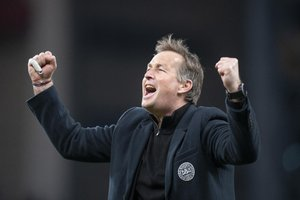

A Seleção Dinamarquesa de Futebol representa a Dinamarca nas competições de futebol da FIFA e é representada pela Associação Dinamarquesa de Futebol. A equipe tem uma vantagem competitiva desde os anos 80, com três vitórias na primeira fase da Copa do Mundo de 1986, o que lhe valeu a alcunha "Dinamáquina". Depois vieram o triunfo da Eurocopa 1992, quando venceram a Alemanha por 2 a 0 na partida final e também a conquista da Copa das Confederações de 1995 derrotando a Argentina por 2 a 0.
Kasper Hjulmand: fez basicamente uma carreira doméstica tanto como jogador quanto como técnico. Quando saiu para treinar fora do país teve uma responsabilidade imensa. Foi escolhido para substituir Thomas Tuchel, no Mainz, em 2014. Após um bom início, encarou longa seca de vitórias, sendo demitido antes do fim da temporada. Assumiu a Dinamarca em 2020.
| Principais Jogadores | |||
|---|---|---|---|
| Nome | Idade | Altura | Peso |
| Simon Kjaer | 33 | 1,91M | 72Kgs |
| Andreas Christensen | 26 | 1,88M | 72kgs |
| Jens Stryger Larsen | 29 | 1,88M | 78kgs |
| Joachim Andersen | 32 | 1,88M | 68Kgs |
| Rasmus Kristensen | 25 | 1,75m | 77Kgs |
| Joakim Maehle | 25 | 1,80m | 72Kgs |
| Victor Nelsson | 25 | 1,75M | 80kgs |
| Alexander Bah | 24 | 1,83M | 68kgs |